Plot a 2D Gaussian and its decorrelated and whitened transformations
Contents
% This file is from pmtk3.googlecode.com function gaussPlot2dDemo2()
setSeed(0); mu = [1 0]'; % mean (must be row vector for mvnpdf) S = [2 1.5; 1.5 4]; % covariance plotSurf(mu, S, 'Full')
U = eigenvectors, D = diagonal matrix of eigenvalues.
[U,D] = eig(S);
Decorrelate
S1 = U'*S*U;
plotSurf(mu, S1, 'Diagonal')
Compute whitening transform:
A = sqrt(inv(D))*U'; mu2 = A*mu; S2 = A*S*A'; % might not be numerically equal to I assert(approxeq(S2, eye(2))); S2 = eye(2); % to ensure picture is pretty plotSurf(mu2, S2, 'Spherical') placeFigures();
end
function plotSurf(mu, S, ttl)
% Gaussian surface plot
U = eigenvectors, D= diagonal matrix of eigenvalues.
[U, D] = eig(S);
Evaluate p(x) on a grid.
stepSize = 0.5; % 0.1 is better for contours, 0.1 for surfc [x, y] = meshgrid(-5:stepSize:5, -5:stepSize:5); % Create grid. [r, c]=size(x);
data(k,:) = [x(k) y(k)] for pixel k
data = [x(:) y(:)]; p = gaussProb(data, mu', S); p = reshape(p, r, c);
scale density so it sums to 1
p2(x,y) defeq p(x: x+dx, y: y+ dy) approx p(x,y) dx dy
p = p*stepSize^2; assert(approxeq(sum(p(:)), 1, 1e-1))
3D plot
figure(); surfc(x,y,p); xlabel('x', 'fontsize', 10); ylabel('y', 'fontsize', 10); zlabel('p(x,y)', 'fontsize', 10); rho = S(1,2)/sqrt(S(1,1)*S(2,2)); title(sprintf('%s, S=[%3.1f %3.1f ; %3.1f %3.1f], %s=%3.2f', ... ttl, S(1,1), S(1,2), S(2,1), S(2,2), '\rho', rho)) printPmtkFigure(sprintf('gaussPlot2dDemoSurfCoarse%s', ttl));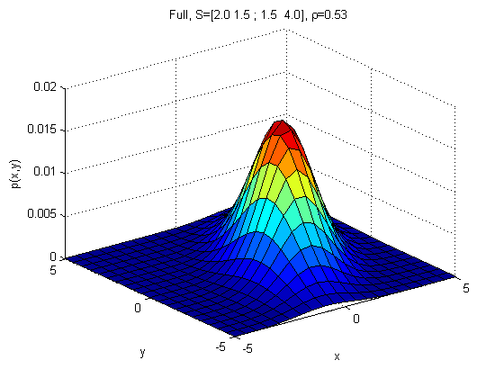 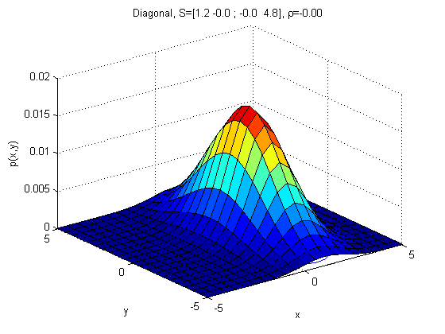 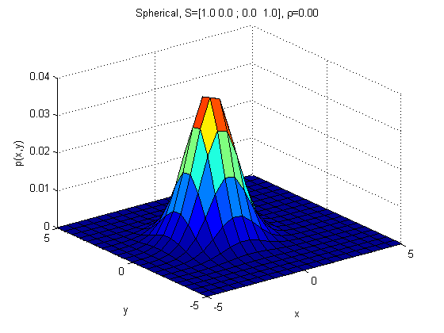
Plot contours
figure(); contour(x, y, p); axis('square'); xlabel('x', 'fontsize', 10); ylabel('y', 'fontsize', 10);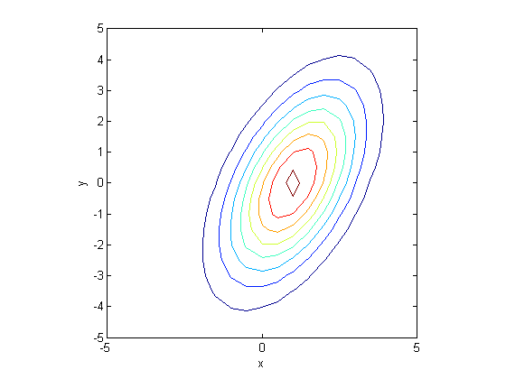 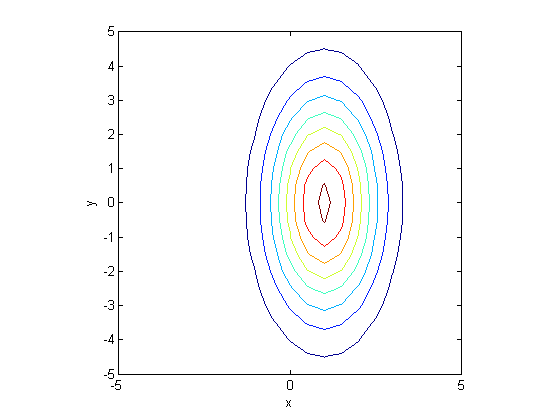 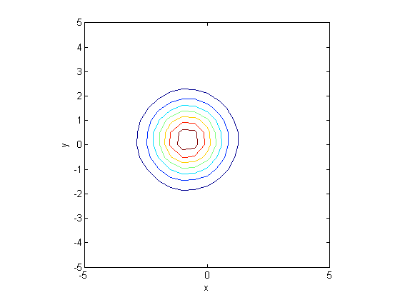
Plot first eigenvector
line([mu(1) mu(1)+sqrt(D(1,1))*U(1,1)], ... [mu(2) mu(2)+sqrt(D(1,1))*U(2,1)], 'linewidth', 3)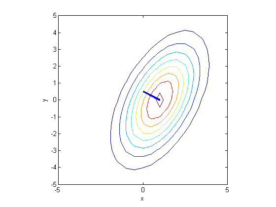 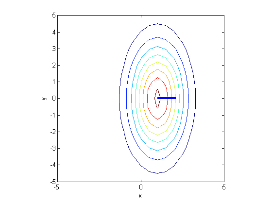 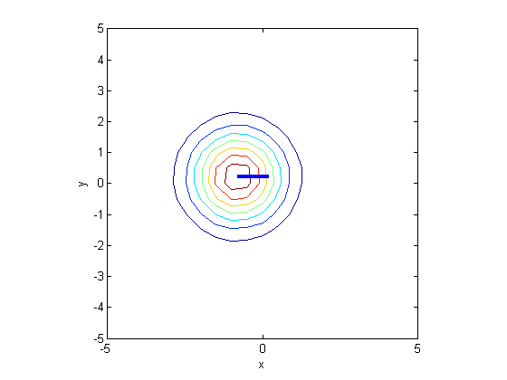
Plot second eigenvector
line([mu(1) mu(1)+sqrt(D(2,2))*U(1,2)], ... [mu(2) mu(2)+sqrt(D(2,2))*U(2,2)], 'linewidth', 3) title(sprintf('%s, S=[%3.1f %3.1f ; %3.1f %3.1f]',... ttl, S(1,1), S(1,2), S(2,1), S(2,2))); printPmtkFigure(sprintf('gaussPlot2dDemoContour%s', ttl));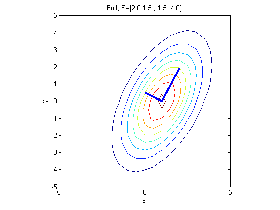 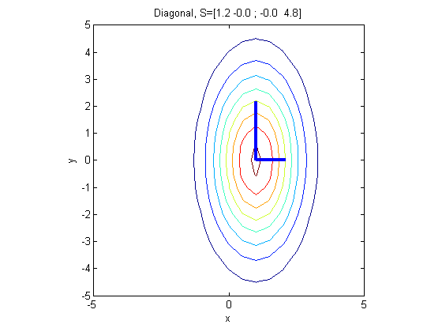 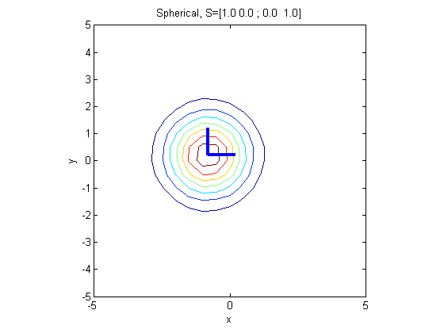
end